|
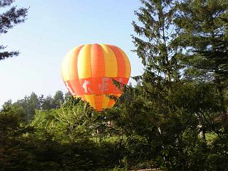 前日ホテルに到着して、部屋のキーなどを受け取るためフロント前で待っていたところ、 「予約しておこうか？」 このホテルは気球を売りにしているようで、ロビーには大きな気球の形をした飾りがありました。 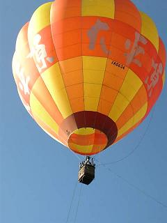 翌朝目が覚めてみると、窓の外はミルク色の霧に塗り込められ近くにある樹木だけが見えていました。 気球に乗る＝どこかへ移動としか考えなかった私は、移動してそこからまた車に乗って帰ってくるのでは、朝食を諦めでもしない限りバスの出発時間に間に合わないのではないか…？ 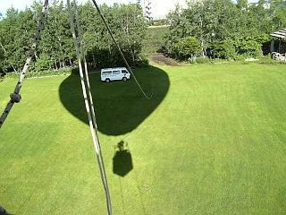 繋がれているとはいえ、風がなければ４０ｍほど上がるそうですが、この日は少し風があって３５ｍしか上げられないとのことで、前に乗った人たちの気球を見ていると、上でかなり流されているらしく離陸した地点と着地する地点はその時によって違いました。 気球の下に下がっているカゴから はぁ？ 私たち４人と気球を操る男性を乗せた影が移動します。（写真上） 「うわぁー、最高！」 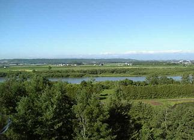 ３６０度の大景観にあっちを見たりこっちを見たり、十勝川の向こうに見えるのは４１の山々が連なるという【日高山脈】でしょうか… 風がとても爽やかで、頭の上で時折大きなガスバーナーが ちなみにホテルは６階建てでしたが、如何でしょうこの高さ… 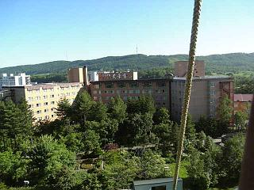 綱で繋がれているせいばかりではないと思いますが、まったく揺れることもなく、高所恐怖症の私でも真下さえ見なければ快適な乗り心地で、５分なんてあっという間に終わってしまいました。 ホテルでは野菜を自家栽培しているそうで、広いところに同じ物一種類だけをずらーっ植えた畑ではなく、いろいろなものが植えられてデコボコの緑のその農場らしきものもホテルの近くに見えておりました。 ちなみに前夜の食事は会席料理で、こんなメニューが添えられていました。 お 献 立 本日の食材 品数が多いのでもの凄く食べたように思われそうですが、お上品（ままごとみたい）にちまちまとお皿に並んでおりました。（＾～＾ ） 気球体験後に食べた朝食はバイキングでしたが、野菜がとっても新鮮で大満足の食事でした。 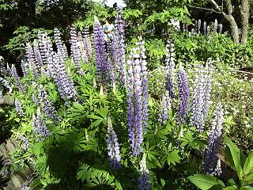 皆様もご存知だと思いますがこのルピナス。 それに『イタドリ』がバカデカイ！ 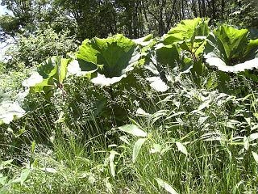 「あんに(あんなに＝名古屋言葉ではありません）大きな蕗がいっぱいあって食べられんとはもったいない…」 「あの蕗がガンに効くとかいう噂を流してみやあー。あっという間に、消えてなくなるに…」（＾ｍ＾ ） この蕗は、茎が赤くなる前には食べられるのだそうで、以前にも食べた記憶はあるのですが、うまく利用すれば全国ネットで売れるのではないか？ 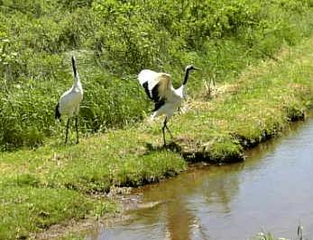 さて、この日最初に訪れるのは、明治時代の乱獲によって絶滅寸前となり、昭和２７年に国の特別天然記念物に指定された『丹頂』（正式には『鶴』がつかない）のいる【釧路丹頂鶴公園】です。 ここには、高い網でいくつかに囲ったエリアが作られており、それぞれに決まった丹頂が棲みついているようですが、屋根は設けられておらず、いつでも自由に出入りができるようになっています。 丹頂は一度夫婦の契りを交わすと一生連れ添うのだそうで、写真のように番で棲んでいるものがほとんどでしたが、中にはまだお相手が見つからないのか一羽で寂しそうにしているものもおりました。（＾ｍ＾； 屋根がないので、何処からでもそれぞれの住まいに不法侵入する事ができ、青鷺やカラスが餌のトウモロコシを狙ってやって来るので、主はそれらの侵入者を追い払うのに大変そうでした。 次に訪れたのは、丹頂の公園からさほど遠くはない【釧路湿原】で、以前来たときは蚊の襲撃が凄かったので、持参してきた虫除けのジェルを友人たちに廻すと、食べ物が周ってきたのかと勘違いされ、これこれしかじか…と説明をしてバスが駐車場に入る前に塗ってもらいました。 が、ここでは１時間も自由時間がなく、展望台から森の向こうに見える湿原をチョロッと見ただけで、どうしても納得がいかないおばさん軍団は遊歩道を歩き始めましたが、３０分近く歩いて森を抜けなければ湿原は見えないので途中で引き返すしかありません。 「この辺りには丹頂やエゾ鹿などがよく出てきますので、お一人でじいっと見ていないで大きな声で皆さんにも教えてあげてください」 勿論大きな声で知らせましたが、背の高い草むらにいたので真横になって初めて姿が見えたという感じで、ガイドさんも見つけられなかったらしく、 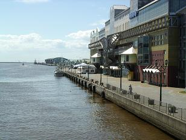 それから暫く走って釧路で昼食です。 丸い帽子にすり鉢の目を荒くしたようなデコボコの筋をつけ、丸く盛り上がったところに野菜や羊の肉などを乗せて焼くと、帽子のツバを上に向けたような鍋の底に余分な水分や油が落ちるというヘルシー焼肉とでも言いましょうか…その昔、鉄兜で肉を焼いたことからこんな鍋ができたようです。 店員さんがお手本を見せてくれ、それにしたがって先ずはもやしやキャベツなどの野菜を全部乗せ、エビ、ホタテ、イカ、羊などをその上に乗せて暫し待ちます。 お腹のすいた私たちは、待ちきれずに早く火の通る野菜類を肉類の下から掘り出して食べ始め、気がついてみれば肉類ばかりが鍋の中に残っておりました。（＾ｍ＾； 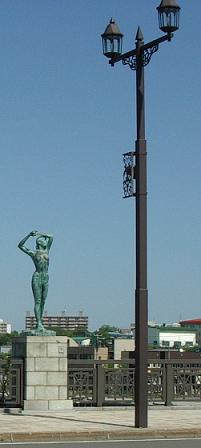 いやあー美味しかったですねぇ… 幣舞橋は釧路の中心街を二分するように釧路川に架かっており、欄干に四季を表す乙女の裸像の彫刻がよっつ立っています。 日本一といわれる秋の夕焼けをバックにした裸女のシルエットが美しいそうで、霧が多いことでも有名だそうです。 全国的にも珍しく傾斜地に設置されたぬさまい公園の花時計が見える真ん中あたりで引き返し、時間まで食事をした店の一階で海産物などのお土産を物色しました。 さて、座席が横に三つしかないデラックスバスにも乗り慣れてきましたが、案内をしてくれるガイドさんは、普段話しているときは何の変哲もないのですが、マイクを握ると途端に子守唄嬢に変身するという凄技の持ち主です。 この時のようにお昼ご飯の後などは、どんなガイドさんであれ魔法の呪文など唱えなくても乗客のお喋りは次第に少なくなり、眠りの車内となりますが、このガイドさんは違います。 朝 どう説明したら皆様に理解していただけるのか…ずいぶん悩みましたが、私的にはカーラジオのＦＭ放送で聞く、クラシック音楽番組のアナウンサーという表現くらいしか見つけられませんでしたが、篭ったような低く抑揚のない話し方が曲者なんです。 で、前日からＪＲの単線レールがバスの通っている道の脇を付きつ離れつしているのが見えるのですが、一向に電車が通らずぼやいていたのですが、ガイドさんの子守唄口調に引き込まれてふうぅーっと意識が遠退いたときに、ガタン！ゴトン！と音を立てて走っていたそうで、トウモロコシさんもまくわうりさんも知らせてくれようとしたようですが、私が寝ていたので 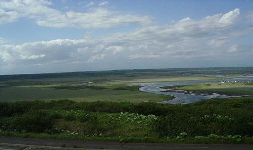 途中、厚岸（あっけし）湖に立ち寄り、琵琶瀬展望台にて少々長いトイレ休憩です。 蛇行して流れているのはオゼ川で、右側に白くチラホラあるのは民家だと思いますが、釧路湿原には何度道路を造っても沈んでしまうと聞いていたので、ここ霧多布湿原から翌日のコースである標津まで、所々に広がった湿原地帯には民家が点在しているのが不思議な光景に見えました。 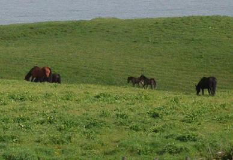 写真（上）中央の手前に白く見えているのは、あの大きな蕗の葉が風で裏返しになっているだけで花ではありません。 道路を挟んで展望台から望む湿原を見て後ろを振り返ると、太平洋をバックに放牧場で馬たちがのんびりと草を食んでいました。 道中馬や牛たちが放牧場にいるのをカメラに収めようと構えていたのですが、とにかく信号の少ない道路ばかりで、走行するバスの中からでは上手く写すことができず、ここに来てやっと馬の姿を写すことができました。 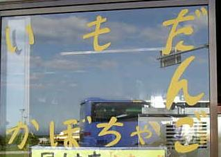 売店の窓にこんな文字を見つけ、名古屋では売っていないものなので『かぼちゃ団子』を注文したところ、芋団子とセットになっていたようで、普通の切り餅のように大きなふたつの団子が出てきてビックリ仰天！ 以前釧路湿原で売っていたものは、みたらし団子を平らにしたような大きさだったので、出てきた団子の大きさに恐れをなしながらも、 
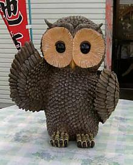 それを黙って見ていたのがこのフクロウたちで、ふたつのテーブルにひとつずつ置いてありました。 琵琶瀬展望台を出ると、後は根室のホテルまでまっしぐらですが、道東のバス旅はトイレ休憩をするところが少なく、２時間くらい走るのが当たり前のようです。 いつもは１時間～１時間半くらい毎にあるトイレ休憩なので、一度くらいパスしても平気な私ですが、今回の旅は流石に用心して利尿作用のあるコーヒーを控え、立ち寄ったところは必ずマーキングするようにしてました。 この日の宿は、出発の最終案内で変更になっており、大浴場が完備されていないさるホテルから、同じ系列の『別亭』となっていました。 道路標識を見ていると『花咲岬』なんて所もあるようで、水産加工場もチラホラとあるので、 坂道を下れば港のありそうな風景をチラリと見て、バスはずうっと見え隠れしながらも並んで走ってきたＪＲの線路に付いて行くように左へ曲がり、水産工場の前を通って、今度は右折… 舗装もしていないような道路の入り口には『Ｇホテル 別亭 ○○亭』なんて書いてあり、細い道に入って間もなくバスは停まりましたが、何処をどう見まわしてもそれらしき建物が見当たらず、 「ちょっと ちょっとぉ…」（￢￢； 「もしかしたら、ここで降りて歩いていくのかもしれないよ…」 バックし終わったバスが停車してドアが開けられ、 自動になった二枚のガラス戸を入ると正面はガラスの壁になっており、右手に向きを変えると、４～５歩歩いたところにザラ板が敷いてあり、その先にはお定まりのように下駄箱が… 下駄箱に収められているスリッパと、履いてきた靴を交換してロビーに足を踏み入れると、四人掛けの応接セットが二組置いてあり、入り口の前面に立ちはだかっていたガラスの壁の向こう端に小さなフロントがありました。 後から入ってくる人に押されるようにして、靴脱ぎから５～６歩奥へ進んで応接セットの椅子の背もたれに近づくと、フロントが途切れた奥に食事をするらしき座敷が見えています。 部屋の鍵を受け取って２階の部屋へ向かう階段は、フロントの裏側にありました。 階段を上がると左右に伸びた廊下を挟んでドアが並んでおり、客室はこの２階部分だけ。 入り口を開けて少し高くなっている板の間に上がると、右側に部屋があってすぐ目の前にまたドアが… お風呂は誰も使いませんでしたが、トイレはドアを開けると横向きに座っているかたちになるのですが、壁が目の前に迫っているという有様で、私はちょっと斜め座りのかたちで用を足していました。（＾ｍ＾； ４畳半と６畳が間に襖もなく繋がっているという細長い部屋なんですが、畳が妙に小さい。 団地サイズよりもっと小さい感じで、４畳半に布団を二組敷いたらいっぱいいっぱいで、これは『なに間』なんだろう？とみんなで首を傾げました。 たった一つあった窓を開けてみると、白い鳥の羽が網戸にいっぱい付いており、こりゃいかんとばかりに急いで窓を閉めました。 さて食事でございますが、ちゃんこ鍋の会席に大きな花咲ガ二が一匹ずつ並んで、 「うん？」（ ’～')Ψ
他の身も食べてみましたが、冷凍を戻してもう一度冷凍されていたカニのように身がぱさぱさで、カニ好きの私としてはこれはバツ!!（｀へ´) 他の三人も顔を見合わせて、いつの間にやらカニから手が離れておりましたが、ふと隣に座ったご夫婦を見ると、私の斜め前のだんな様がカニの身をきれいに取り出して食べており、猫もがっかりするくらいきれいに殻だけを残して平らげました。 オネエさんがカニにあまり手をつけてない私たちのところにやって来て、食べ方を教えてくれましたが、お隣で見事なほど丁寧に食べていらっしゃるのに、「まずい！」（｀へ´)Ψとは言えず、 こうなったらしおりに書いてあったヒノキの『大浴場』に賭けるしかない！と、真っ先に一人でお風呂へ行った水菜さん。 そんなに急いで出てくるほどのお風呂って…？ たった一人でこんなお風呂に入ればそりゃ怖いかもしれません。（＾ｍ＾； 温泉ではないので、私たちもあまり居心地のよくないお風呂を早々に出て、帰り際に誰もいないフロントで根室の案内のパンフレットを勝手に貰い、もう一枚変わったものがあったので手を伸ばしたところ、それは一枚しかなかったのでぱらぱらと捲ってみると、根室のホテル案内のようなページが目に入り、この別亭は…？と見てみると、一人￥１８０００～となっており、驚き桃の木山椒の木！ 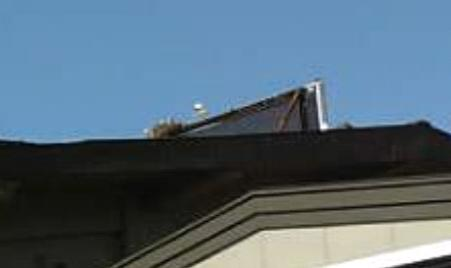 写真を無理矢理引き伸ばしてみたのですが、これは私たちが泊まった○○亭の屋根の上です。 翌朝、朝食前に外へ出てみるとウミネコの鳴き声が騒々しかったので、何処にいるのかと探していると、女将らしき人が屋根の上にウミネコが巣を作っており、それをカラスが狙ってくるので白 Vs 黒の争いが絶え間なく、玄関前を何度掃除しても羽が落ちてくるのだと、申し訳なさそうに話してくれました。 白く見えているのはウミネコで、その後ろにあるのが巣です。 作成:2007-01-15 コメントはこちら 続きを読む
続きを読む
 |